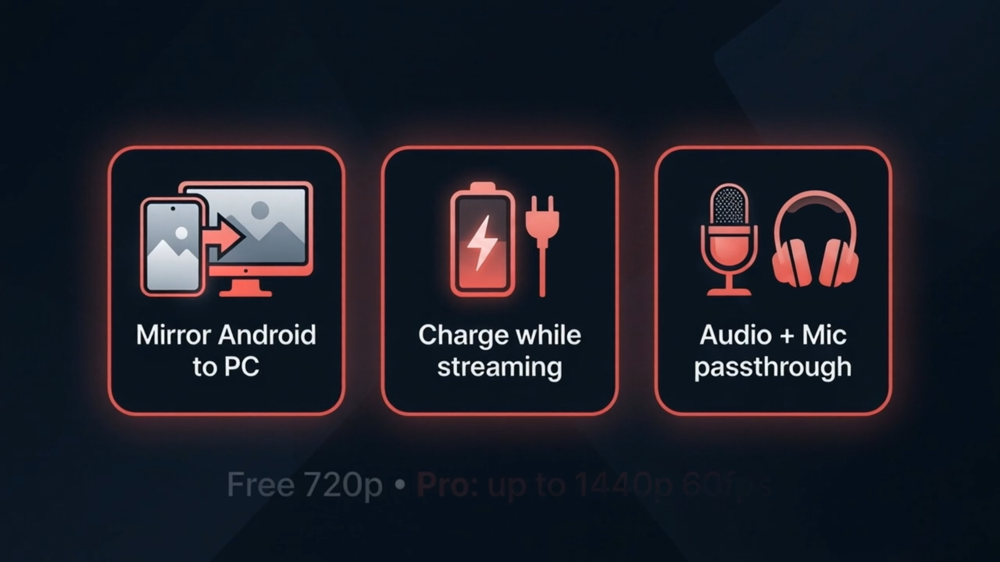
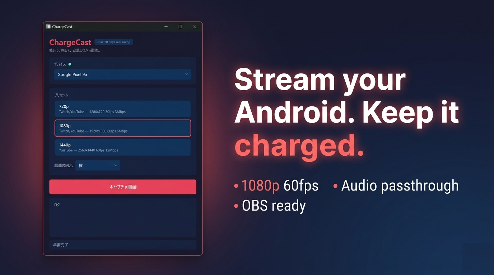
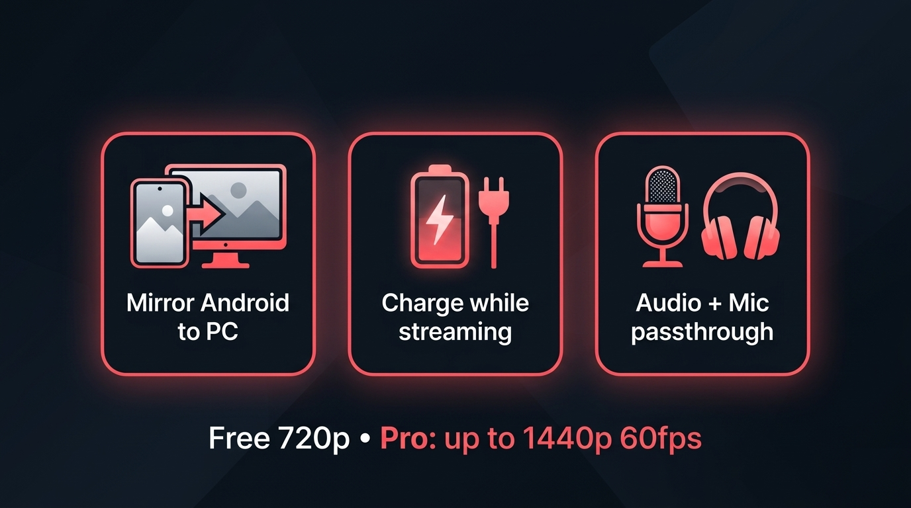
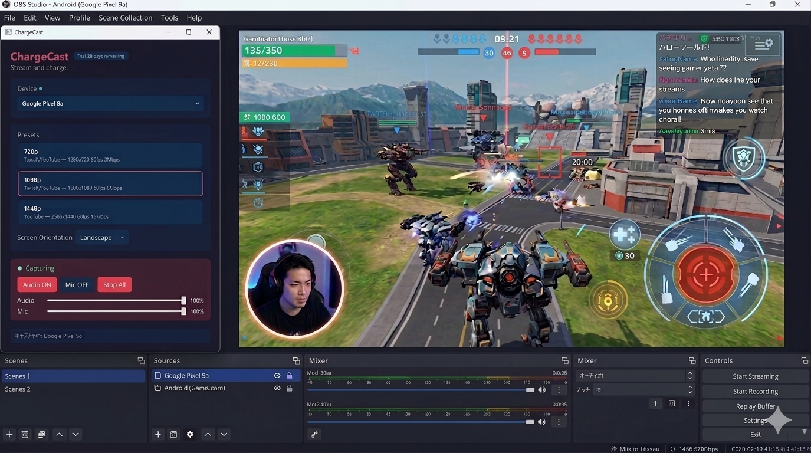

Un solo cavo USB.
Porta schermo Android, audio di gioco e microfono su Windows — sempre in carica.

scrcpy da CLI o DroidCam — ma l'audio non arriva, o il rituale diventa pesante a ogni sessione.ChargeCast risolve tutti e quattro i problemi con un cavo USB e una GUI amichevole. Solo Windows, pensato per lo streaming.
Il percorso più corto da «forse potrei streammare» a «sono live».
Attiva il debug USB sul tuo telefono Android e collegalo al PC.
Il normale cavo di ricarica va benissimo. Sì — il telefono si carica mentre trasmetti.
I percorsi dei menu cambiano un po' a seconda del produttore (Samsung: Impostazioni → Info sul telefono → Informazioni software → tocca Numero di build).

Scegli 720p / 1080p / 1440p / Custom con un clic. Si apre una finestra scrcpy con già dentro lo schermo del tuo Android. Punta la Cattura finestra di OBS lì — fatto.

Mixa tutto dentro ChargeCast e passa a OBS un'unica sorgente pulita. Basta lottare col mixer a stream in corso.
Sono più o meno 3 minuti da zero. Dopo basta premere «Avvia trasmissione» su OBS.
Il tuo telefono in una finestra Windows, direttamente via USB
Lo stesso cavo alimenta il telefono — niente throttling termico, niente ansia da batteria
Mixer a tre canali per audio del dispositivo, audio PC e microfono
720p / 1080p / 1440p a 60fps, tarati per Twitch e YouTube
Il layout della scena di OBS resta intatto tra una sessione e l'altra
English, 日本語, 中文, 한국어 e altre ancora

I prezzi sono mostrati in USD come riferimento. Microsoft Store li converte nella tua valuta locale al momento dell'acquisto. Tutti i pagamenti e le cancellazioni passano dal tuo account Microsoft.
scrcpy da CLI)No. Basta attivare «Debug USB» nelle Opzioni sviluppatore di Android.
Sì. Ciascuno dei tre canali ha il suo slider.
OBS Studio è il setup di riferimento (usa una sorgente Cattura finestra). XSplit e strumenti simili funzionano allo stesso modo.
L'orientamento si può bloccare su Portrait, Landscape o Auto, così il tuo layout OBS resta stabile.
Tutta la cattura è locale via ADB. ChargeCast di suo non invia informazioni sul dispositivo da nessuna parte.
ChargeCast integra scrcpy con un mixer audio a 3 canali e una GUI a un clic, così audio di gioco e microfono arrivano in OBS come una sola sorgente pulita. scrcpy puro non sempre riesce a trasportare l'audio di gioco (solo Android 11+, con limiti) e DroidCam tratta il telefono come una webcam, non come uno specchio dello schermo. ChargeCast è costruito attorno al flusso dello streamer: cavo USB, ricarica, Cattura finestra in OBS.
ChargeCast non è un'app di streaming a sé stante. Pensalo come il palco che consegna a OBS una ripresa già pulita.
Una volta sistemata la scena OBS, la sessione parte con un solo gesto: collega il cavo, premi Start Capture.
v1.6.1 Release di stabilitàv1.6.0 Rifinitura del preset Custom, gestione della finestra scrcpy, passaggio alla prova di 7 giorni del Microsoft Storev1.5.0 Preset di risoluzione Custom, memorizzata la posizione della finestra scrcpyv1.4.0 Slider Device Volume e mixer audio a 3 canaliv1.3.x e precedenti — Rilascio iniziale, mirroring di base e passthrough audio
Attacca il cavo. Vai live.
Un cavo USB, sette giorni gratis, tutte le funzioni sbloccate.